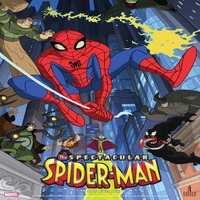

Retour
Le Giga-Boulet : Articles d'Humour
Accueil
Articles
Contact
Article au hasard
Pourquoi l’Humour en Ligne Cartonne ? Analyse d’un Phénomène Viral
Les Blagues Françaises les Plus Connues et Leur Origine
L’Art du Jeu de Mots : Comment les Humoristes Maîtrisent la Langue
Les Mèmes Français qui Ont Marqué Internet
De Coluche à Cyprien : L’Évolution de l’Humour Francophone
Humour Décalé : Pourquoi On Adore les Blagues Absurdes ?
Les Parodies en Ligne qui Ont Fait le Buzz
L’Humour Noir en France : Limite ou Liberté d’Expression ?
Pourquoi les Sketches Comiques Reviennent en Force sur YouTube ?

Satire et Politique : Comment les Humoristes Décryptent l’Actu
Comment l’Humour Francophone a Évolué au Fil des Siècles
Pourquoi les Sketches YouTube Ont-ils Supplanté la TV ?
Top des Pages d’Humour les Plus Suivies sur Instagram et TikTok
L’Humour Absurde : Pourquoi On Rit de l’Incompréhensible ?
Le Rôle du Sarcasme dans la Culture Humoristique Française
Blagues de Geek : Quand la Pop Culture Devient Drôle
Les Meilleures Parodies en Ligne : Du Cinéma à la Politique
La Satire Politique : Jusqu’où Peut-on Aller ?
Pourquoi les Blagues sur l’Actualité Cartonnent ?
Les Meilleurs Dessinateurs de Presse en France
Humour et Censure : Peut-on Rire de Tout en 2025 ?
L’Humour et les Réseaux Sociaux : Entre Liberté et Polémique
Les One-Man Shows Incontournables de la Scène Française
Comment les Humoristes Écrivent-ils leurs Sketches ?